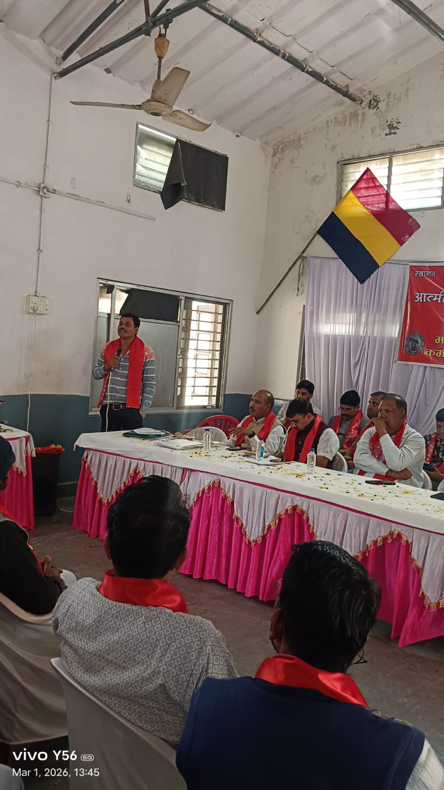
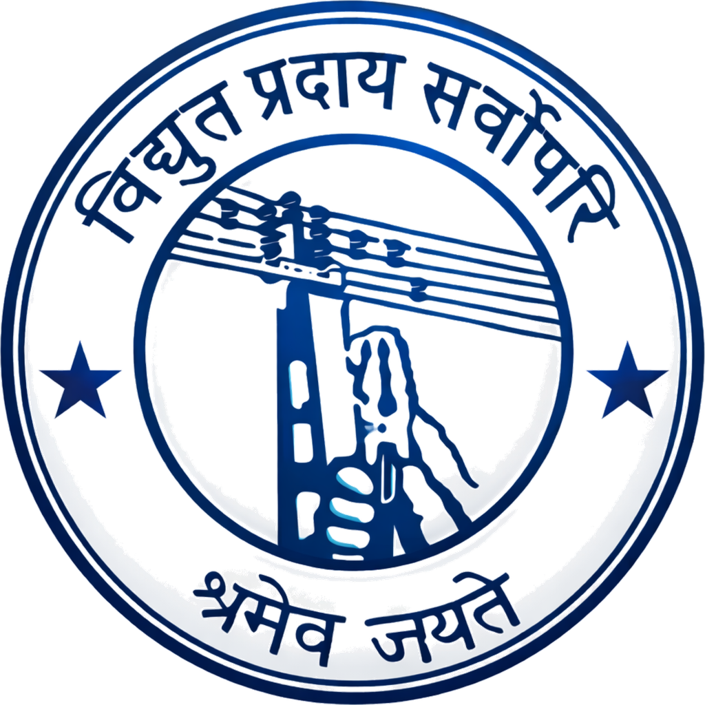
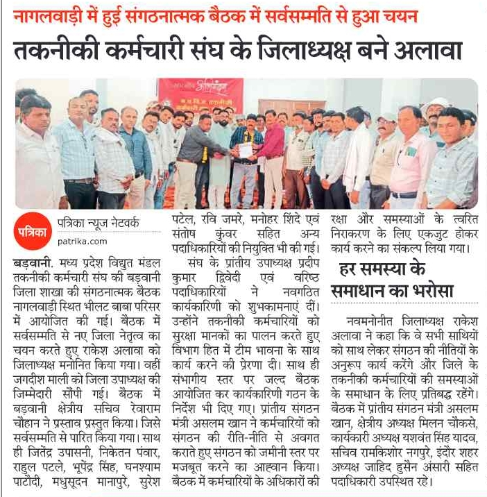
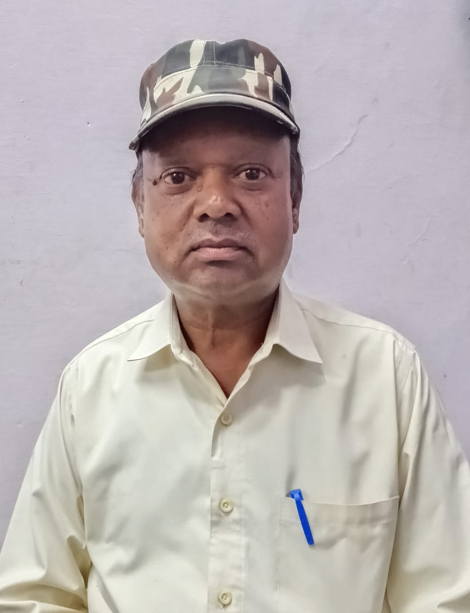
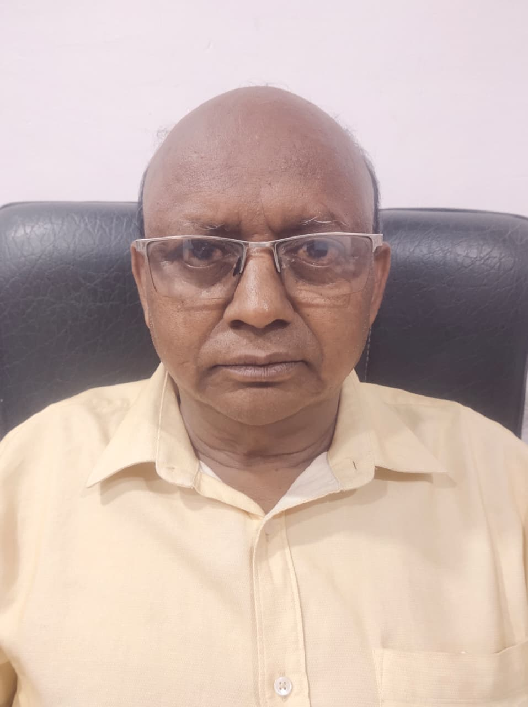

फोटो संग्रह




श्रमेव जयते
मध्य प्रदेश विद्युत मंडल तकनीकी कर्मचारी संघ, मध्य प्रदेश विद्युत क्षेत्र में कार्यरत तृतीय, चतुर्थ श्रेणी तकनीकी कर्मचारियों का एकमात्र संगठन है जो, शासन एवं कंपनी प्रबंधनों से सामंजस्य स्थापित कर प्रचलित श्रम कानूनों/नियमों के मुताबिक उनकी समस्याओं के निराकरण सहित श्रमिक अधिकारों के संरक्षण एवं विद्युत मंडल की समस्त उतरवर्ती कंपनियों के बेहतर भविष्य हेतु कृत संकल्पित है।





प्रांतीय अध्यक्ष

महासचिव
प्रांतीय उपाध्यक्ष (जेनको)
उपाध्यक्ष
प्रांतीय उपाध्यक्ष
प्रांतीय सचिव (ट्रांसको)
प्रांतीय संगठन मंत्री

सचिव
सचिव (भोपाल)